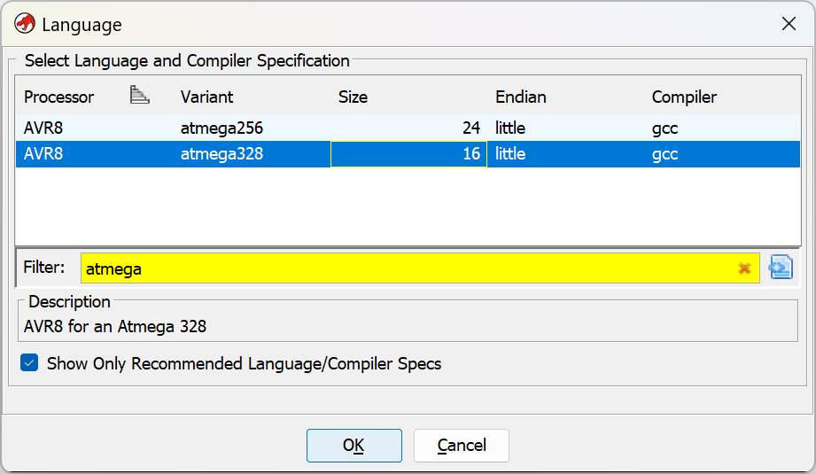
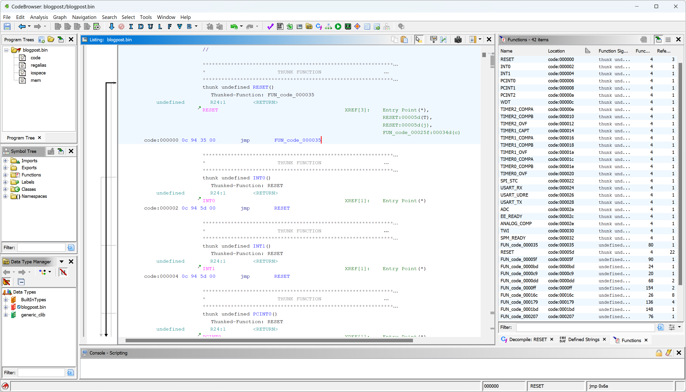

Literature about reverse engineering Arduino binaries using Ghidra appears to be sparse. Therefore, with this post, I want to give a short introduction to the architecture and provide a starting point for analysis. However, since Ghidra only rudimentary supports the ATmega328P (used by the Arduino Uno), the post will also outline the state of the current (April 2024) support for this architecture and demonstrate its limits.
Disclaimer: At daytime, I work in offensive IT security, which requires some level of reverse engineering, however mostly of high-level binaries (Linux and Windows). I also have some experience with microcontrollers, but I am by no means a well-versed embedded systems (reverse) engineer.
Test Setup Link to heading
I will be working with the Arduino Uno Rev 3. Maybe in the future I’ll focus on other Arduino models and Arduino-like platforms, for example the Arduino Micro or the ESP8266, but for now this must suffice.
Also, I will be using the example project
“ASCIITable”
that is shipped with the Arduino IDE. You can find its source code on
GitHub
if you want to follow along cheat, but for now, let’s pretend that we lost
the source code.
Dumping the Flash Link to heading
The binary can be dumped from the Arduino’s flash with the tool avrdude that
is shipped with the Arduino SDK1:
avrdude "-C/etc/avrdude.conf" -v -V -patmega328p -carduino -P/dev/ttyUSB1 -b115200 -D "-Uflash:r:blogpost.bin:r"
If you would like to reproduce this, you might need to change /dev/ttyUSB1 for
the serial port that the Arduino is registered at, which you can list using ls /dev/ttyUSB*. The same also works on Windows, where the serial port is called
something like COM1.
The invocation generates the file blogpost.bin which contains the flash
contents as raw binary. If you obtained the flash contents in Intel HEX
format (which is a bit more common),
you could convert this file to raw binary using the following command2:
objcopy --input-target=ihex --output-target=binary blogpost.hex blogpost.bin
Ghidra Preparation Link to heading
At the heart of the Arduino Uno is the AVR (formerly Atmel) ATmega328P 8-bit microcontroller (datasheet).
Unfortunately, Ghidra does not directly support this microcontroller. The good news is, though, that it supports similar AVR 8-bit microcontrollers and someone already wrote some helper files for the ATmega328 (shoutout to GitHub user @ahroach).
First, we need to place the file
github.com/ahroach/avr_ghidra_helpers/atmega328.pspec
in the directory Ghidra/Processors/Atmel/data/languages. Then, we modify the
file Ghidra/Processors/Atmel/data/languages/avr8.ldefs and add the
<language> tag highlighted in the following listing:
<?xml version="1.0" encoding="UTF-8"?>
<language_definitions>
<!-- [...] -->
<language processor="AVR8"
endian="little"
size="16"
variant="atmega328"
version="1.0"
slafile="avr8eind.sla"
processorspec="atmega328.pspec"
manualindexfile="../manuals/AVR8.idx"
id="avr8:LE:16:atmega328">
<description>AVR8 for an Atmega 328</description>
<compiler name="gcc" spec="avr8egcc.cspec" id="gcc"/>
<external_name tool="gnu" name="avr:51"/>
<external_name tool="gnu" name="avr:6"/>
<external_name tool="IDA-PRO" name="avr"/>
</language>
<!-- [...] -->
</language_definitions>
Restart Ghidra and you should be able to improt files for the atmega328
architecture configuration.
Analysis in Ghidra Link to heading
Although the following sections certainly assume that you have some basic Ghidra knowledge, I will walk you through the initial analysis:
- After starting Ghidra, create a new project using File > New Project
- Select “Non-Shared Project”
- Choose a parent “Project Directory” (Warning: this directory will be cluttered with a few files) and a project name
- Import the dumped
.binfile, either via drag-and-drop or by choosing File > Import File from the menu. - Click on “…” next to “Language” and select “AVR8 / atmega328 / 16 / little / gcc”: 
- Confirm all dialogs with OK
- Double-click the imported file to open it in Ghidra’s CodeBrowser
- Ghidra will ask whether to analyze - keep the default options and click Analyze
{kind=link}
You should now see the program’s memory in Ghidra’s CodeBrowser.
Interrupt Vector Table Link to heading
A good starting point for understanding the program is the Interrupt Vector
Table. This table is
usually located at the address 0x00000000 and contains jmp instructions
(so-called interrupt handlers) that the processor calls when an interrupt
occurs, i.e. “something important happens”. The table from the
ATmega258P
datasheet
lists the expected entries.
Show Interrupt Vector Table
| Program Address | Source | Interrupt Definition |
|---|---|---|
| 0x0000 | RESET | External pin, power-on reset, brown-out reset and watchdog system reset |
| 0x002 | INT0 | External interrupt request 0 |
| 0x0004 | INT1 | External interrupt request 1 |
| 0x0006 | PCINT0 | Pin change interrupt request 0 |
| 0x0008 | PCINT1 | Pin change interrupt request 1 |
| 0x000A | PCINT2 | Pin change interrupt request 2 |
| 0x000C | WDT | Watchdog time-out interrupt |
| 0x000E | TIMER2 | COMPA Timer/Counter2 compare match A |
| 0x0010 | TIMER2 | COMPB Timer/Counter2 compare match B |
| 0x0012 | TIMER2 | OVF Timer/Counter2 overflow |
| 0x0014 | TIMER1 | CAPT Timer/Counter1 capture event |
| 0x0016 | TIMER1 | COMPA Timer/Counter1 compare match A |
| 0x0018 | TIMER1 | COMPB Timer/Counter1 compare match B |
| 0x001A | TIMER1 | OVF Timer/Counter1 overflow |
| 0x001C | TIMER0 | COMPA Timer/Counter0 compare match A |
| 0x001E | TIMER0 | COMPB Timer/Counter0 compare match B |
| 0x0020 | TIMER0 | OVF Timer/Counter0 overflow |
| 0x0022 | SPI, STC | SPI serial transfer complete |
| 0x0024 | USART, RX | USART Rx complete |
| 0x0026 | USART, UDRE | USART, data register empty |
| 0x0028 | USART, TX | USART, Tx complete |
| 0x002A | ADC | ADC conversion complete |
| 0x002C | EE READY | EEPROM ready |
| 0x002E | ANALOG | COMP Analog comparator |
| 0x0030 | TWI | 2-wire serial interface |
| 0x0032 | SPM READY | Store program memory ready |
And indeed, we can find this table in the disassembly: 
{kind=link}
The RESET Interrupt Handler Link to heading
Let’s now inspect the RESET interrupt handler, FUN_code_000035:

Before actually doing something interesting, this function initializes the program’s memory, just like an ELF/PE loader would do:
void FUN_code_000035(void)
{
// [...]
R1 = 0;
X = &DAT_mem_0100;
Z = 0x74e;
while (puVar1 = X, (byte)X != 0x54 || X._1_1_ != (char)(R17 + ((byte)X < 0x54))) {
R0 = *(undefined *)(uint3)Z;
Z = Z + 1;
X = X + 1;
*puVar1 = R0;
}
R18 = 1;
X = &DAT_mem_0154;
while (puVar1 = X, (byte)X != 0xfa || X._1_1_ != (char)(R18 + ((byte)X < 0xfa))) {
X = X + 1;
*puVar1 = R1;
}
R17 = 0;
Y = 0x35;
while ((byte)Y != 0x34 || (bool)Y._1_1_ != (byte)Y < 0x34) {
Y = Y - 1;
Z = Y;
_DAT_mem_08fd = 0x56;
FUN_code_00039f();
}
// [...]
}
The first highlighted block copies 0x54 bytes from the raw file offset 0x7e4
to the memory block starting at 0x0100. This procedure is called
__do_copy_data, as it loads a .data section. The corresponding (assembler)
code can be found in GCC’s source
code.
The second block erases 0xfa bytes in memory, starting from the offset
0x154, directly after the data segment. This is called __do_clear_bss and is
also added by
GCC.
The .bss section contains initial values for static variables.
The third block is a bit more complicated, but can be ignored for now. It is
called __do_global_ctors and calls global constructors.
Note that not all RESET interrupt handlers will contain all three of these
blocks. GCC will add them if necessary, and thus some simple programs without
global state will not have them.
In any case, we can use the offsets and lengths to further refine the memory
map: Open the Memory Map window through the Window menu. Delete the
auto-generated mem section. Then, add two sections, one data and one bss
as shown in the following two screenshots. Make sure to fill in the offsets and
lengths determined in the step above:
{kind=link}
{kind=link}
Eventually, your memory map should look like this:
{kind=link}
Note that I configured the data section as read-only because it yielded better
results in my case. I don’t know if GCC will ever put any variable data in that
area.
You may need to rerun the analysis in order for Ghidra to pick up on data
structures in the data section (menu Analysis > Auto Analyze
‘blogpost.bin’…).
__do_copy_data in subsequent screenshots and
listings.Main Function Link to heading
There are two remaining functions called in the RESET interrupt handler, in my case FUN_code_00025f and FUN_code_0003a5.
The latter is a simple infinite empty loop, which GCC calls exit:
void exit(void)
{
do {
/* WARNING: Do nothing block with infinite loop */
} while( true );
}
The first function is the main function. However, as you might know, the
Arduino IDE does not let you write a main function yourself, but instead
requires you write the setup and loop callbacks. These are called directly
by the main function, which can be found in the file
cores/arduino/main.cpp:
int main(void)
{
init();
initVariant();
setup();
for (;;) {
loop();
if (serialEventRun) serialEventRun();
}
return 0;
}
In our case, GCC appears to have inlined init, initVariant, setup and loop.
Therefore, the main function starts with a quite repetitive initializer code:
void main(void)
{
byte bVar1;
R25R24._0_1_ = TCCR0A;
R25R24._0_1_ = (byte)R25R24 | 2;
TCCR0A = (byte)R25R24;
R25R24._0_1_ = TCCR0A;
R25R24._0_1_ = (byte)R25R24 | 1;
TCCR0A = (byte)R25R24;
R25R24._0_1_ = TCCR0B;
R25R24._0_1_ = (byte)R25R24 | 2;
TCCR0B = (byte)R25R24;
R25R24._0_1_ = TCCR0B;
R25R24._0_1_ = (byte)R25R24 | 1;
TCCR0B = (byte)R25R24;
R25R24._0_1_ = TIMSK0;
R25R24._0_1_ = (byte)R25R24 | 1;
// [...]
}
These lines set up the timer prescaler values, according to the init function
in
wiring.c
(here inlined). They are easily recognizable and thus can also be used to find
init or main.
Usually, you will also be able to recognize the huge while (true) { [...] }
loop that repeatedly calls the user-defined loop callback (or its inlined
instructions).
Discover Strings Link to heading
In my experience, Ghidra is worse in detecting strings than binutils’ strings
command. Therefore, I wrote a
script that
applies the same logic to Ghidra memory spaces. Compare the before and after:
{kind=link}
{kind=link}
AVR Calling Convention Link to heading
As someone used to the various x86 and x64 calling conventions (like me), the description of the calling convention used by GCC-AVR appears rather unfamiliar. To sum it up:
- Single-byte parameters such as
charanduint8_tare passed in single registers, starting registerR24, followed byR22,R20, and so on. - Two-byte parameters such as
intand pointers (e.g.char*) are passed in register pairs, starting withR25R24,R23R22,R21R20, and so on. - A similar algorithm is used for larger arguments. These series continue down to
R8, other arguments are passed in memory. - Return values are passed in registers, again starting with
R24for single-byte values,R25R24for two-byte values and so on.
With this knowledge we can now understand an invocation like this:
ldi R24 ,0x14
ldi R25 ,0x1
call FUN_code_00016c
ldi R24 ,0x30
ldi R25 ,0x1
call FUN_code_00016c
These lines appear to correspond to invocations such as:
FUN_code_00016c((void*)0x114);
FUN_code_00016c((void*)0x130);
Unfortunately, Ghidra did not detect this and shows FUN_code_00016c as a
void function without parameters. We can fix this by right-clicking the
function name and choosing Edit Function. Then we add the missing parameter:
{kind=link}
Other Things I Noticed Link to heading
- Functions that are usually passed strings probably have the signature
char*instead ofvoid*. - If the decompiled code contains many expressions like
CONCAT11(DAT_mem_0101,DAT_mem_0100)(aCONCAT11of to adjoint memory addresses), then the lower address (hereDAT_mem_0100,mem:0100) likely marks the beginning of a two-byte value (e.g.intorvoid*).
Final Result Link to heading
After a bit of fiddling and renaming things, I ended up with the following code for the main function:
void main() {
// [...]
Serial_write("ASCII Table ~ Character Map");
Serial_write("\r\n");
R25R24 = CONCAT11(counter._1_1_,(byte)counter);
while( true ) {
counter = R25R24;
FUN_code_0000ff(&CHAR_00h_mem_015d);
Serial_write(", dec: ");
R13R12 = counter;
bVar1 = -(CARRY1(counter._1_1_,counter._1_1_) != false);
R15R14 = CONCAT11(bVar1,-CARRY1(counter._1_1_,counter._1_1_));
if ((bVar1 & 128) != 0) {
FUN_code_0000ff(&CHAR_00h_mem_015d);
}
Serial_print();
Serial_write(", hex: ");
R25R24 = CONCAT11(-(CARRY1(counter._1_1_,counter._1_1_) != false),
-CARRY1(counter._1_1_,counter._1_1_));
Serial_print(R25R24,counter,16);
Serial_write(", oct: ");
R25R24 = CONCAT11(-(CARRY1(counter._1_1_,counter._1_1_) != false),
-CARRY1(counter._1_1_,counter._1_1_));
Serial_print(R25R24,counter,8);
Serial_write(", bin: ");
R25R24 = CONCAT11(-(CARRY1(counter._1_1_,counter._1_1_) != false),
-CARRY1(counter._1_1_,counter._1_1_));
Serial_print(R25R24,counter,2);
Serial_write("\r\n");
if ((byte)counter == 126 && counter._1_1_ == (byte)(R1 + ((byte)counter < 126))) break;
R25R24 = counter + 1;
}
do {
/* WARNING: Do nothing block with infinite loop */
} while( true );
}
In this case, we’ve come close enough to the original code to understand what it’s doing.
I Cheated Link to heading
I am sorry to reveal now that I cheated: I figured out most of the presented information by cross-referencing my dumped binary with an ELF file containing debug symbols. You could argue that this is hindsight, and you would be right. But my goal in this post was to convey a few patterns that can help you analyze unknown binaries.
However, if you are in the comfortable position of possessing source code, you
can generate such an ELF file by running Sketch > Export Compiled Binary
from the Arduino IDE. The ELF file will contain debug symbols and can be
directly loaded into Ghidra (again choosing the atmega328 processor
definition). You can even skip the step of refining the memory map as the ELF
file will contain the corresponding meta information.
This methodology might also be helpful for you if you analyze an unknown sample: Write some experimental code, compile it to an ELF file, analyze both the ELF and the compiled binary, cross-reference symbols and extract patterns that might help you with the unknown binary.
Conclusion Link to heading
Reverse engineering ATmega328P binaries with Ghidra is possible, but still very cumbersome. Especially Ghidra’s decompiler does not appear to correctly represent some of the peculiarities of this 16-bit architecture. Nevertheless, in simple cases, it may be possible to obtain a decent result. And additionally, this project was quite fun for me personally, as it gave me an insight into a different processor architecture than I’m used to working with.
-
Note that this dumps the entire flash, even if the program only occupies a fraction of it. The remaining image might also contain data from previous uses, unrelated to the current program. ↩︎
-
Ghidra in theory also supports Intel HEX files, but I experienced problems mapping additional memory sections to the HEX file. ↩︎